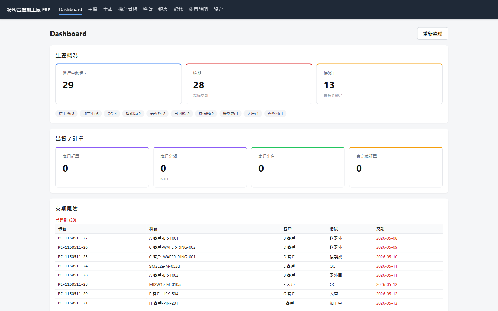
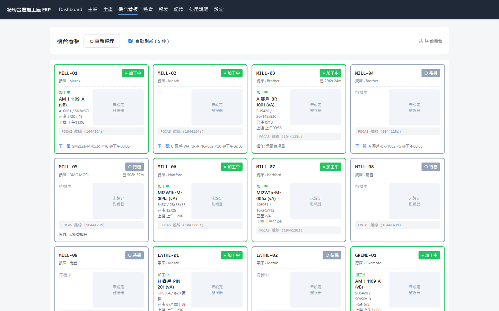
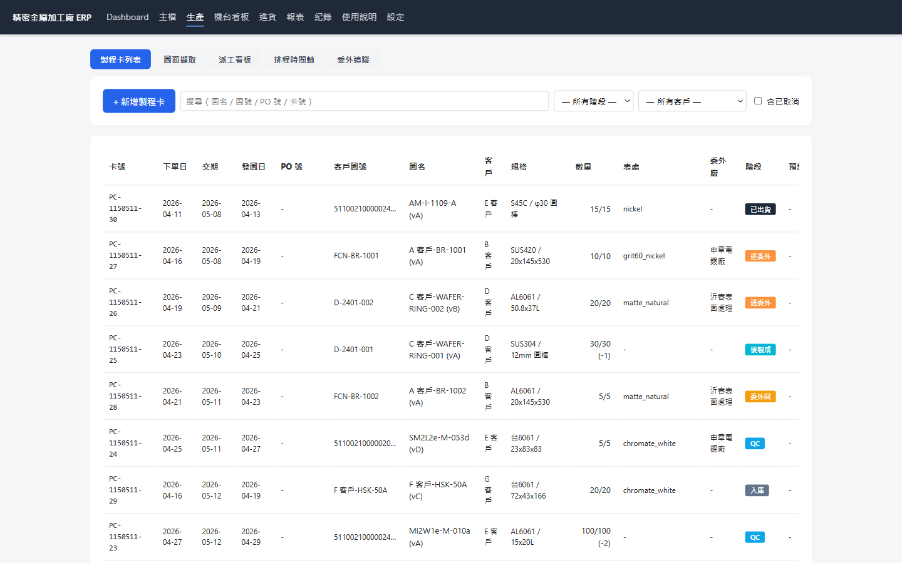
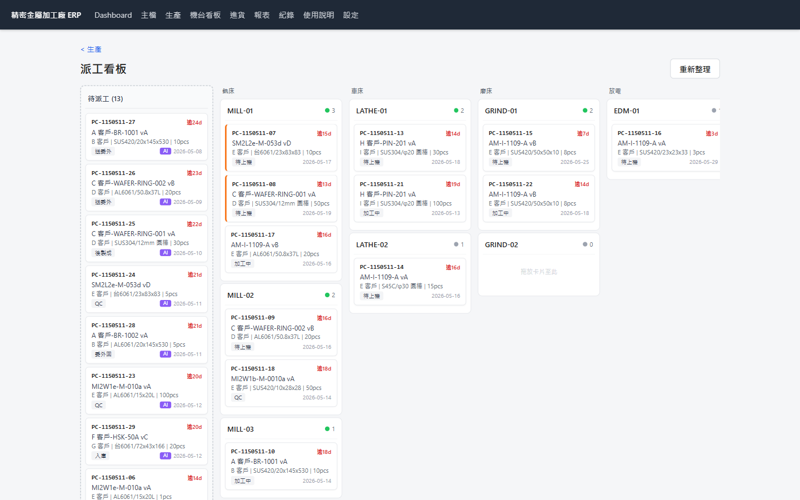
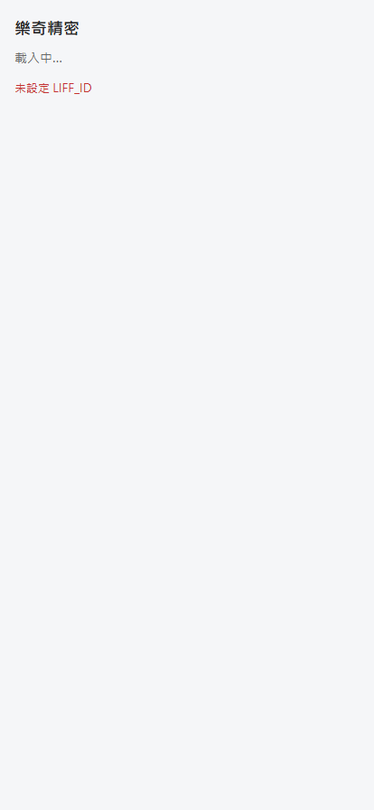
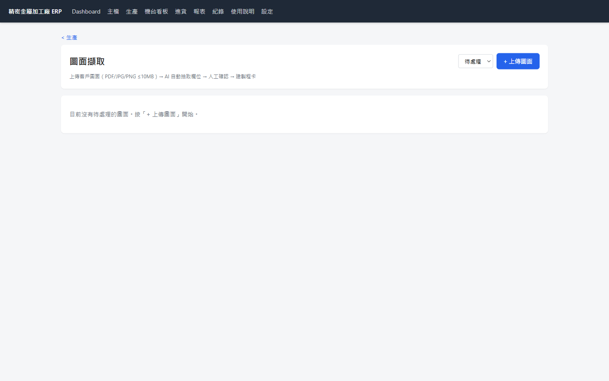
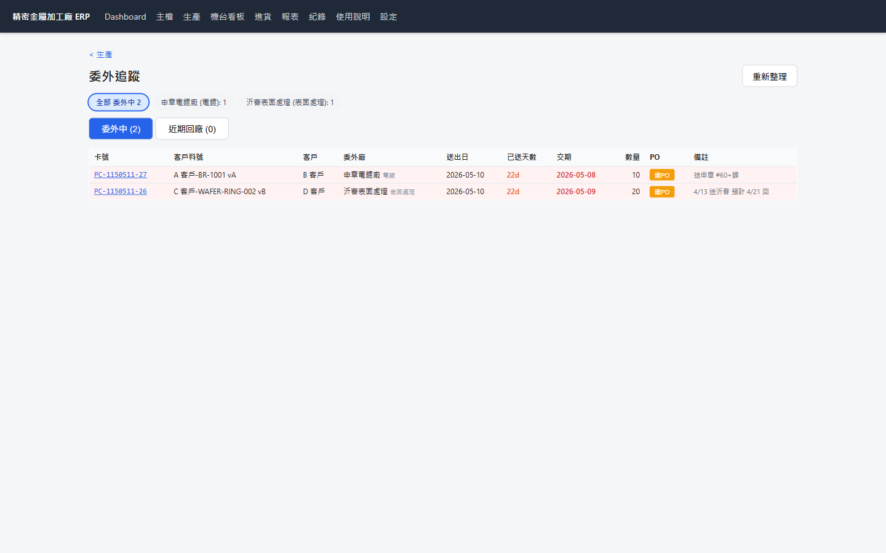
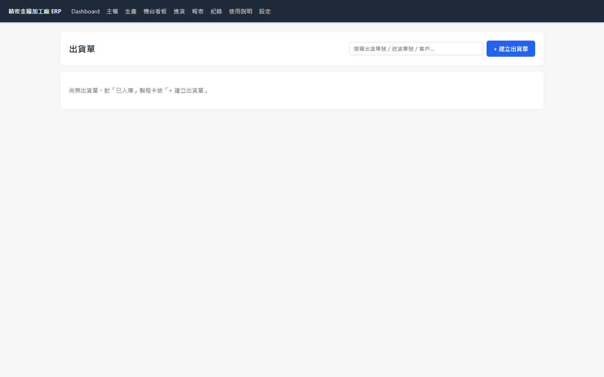
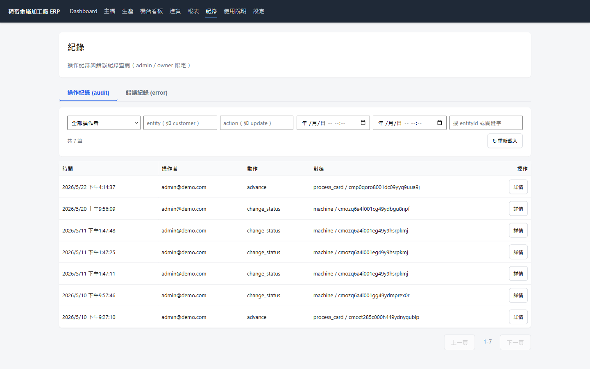

14 台 CNC 即時監控、13 階段製程管制卡、FANUC FOCAS 機台整合、AI 圖面辨識——
從 Excel 紙本管理到全數位製造執行系統。
坐落於台灣中部、員工約 40 名、年產值近億的精密金屬加工廠。承接半導體設備、光學模具、航太零組件的客製化精密件加工，客戶要求 ±0.005mm 精度。
製程卡用紙本流轉，師傅口頭交接，新人無從學起；卡片潰失就重畫。
14 台機台分散在兩個廠房，廠長要走一圈才知道誰閒置、誰停機；派工常衝突。
每筆報價要 call out 工程師、查歷史單、看圖面；新人三個月才有 sense。
誰加工良率高、誰異常少、誰常拖件，全沒數據；獎金發了沒人服氣。
不是用軟體取代人，而是把容易忘、容易錯、容易跑掉的細節，全部變成系統自動處理。讓師傅專心做加工、業務專心顧客戶、老闆專心看數據。
客戶下單 → 圖面建卡 → 派工加工 → 入庫出貨。每張卡都有狀態機，前一步沒做完，下一步不能跳。
每個階段只能轉到合法的下一站；不能從「加工中」直接跳「出貨」。資料源頭錯不了。
建卡時把客戶料號/圖號/版次複製一份在卡上；客戶之後改基本檔，已開卡不受影響。
每次階段轉換、誰操作、時間、備註，全進 Audit Log。爭議「誰改的」一查就有。
老闆早上開電腦第一眼看的畫面。三區 KPI：生產進度、出貨/訂單、交期風險 3 日預警。

進行中製程卡、逾期、未派工，一眼看清。下方階段細分（待上機 8、加工中 6、QC 4...）讓廠長知道瓶頸在哪。
本月訂單、本月金額、本月出貨、未完成訂單。業務看 KPI 進度。
已逾期、3 日內到期、7 日內到期。紅色高亮，老闆能立刻指派人員追單。
5 秒自動刷新。每張卡顯示機台名稱、品牌、狀態（加工中 / 待機 / 異常 / 架機）、目前加工件、FOCAS 即時數據。

透過 CNC 機台原廠 FOCAS protocol 即時抓加工狀態、主軸轉速、進給速度。不需另外裝感測器。
瀏覽器自動 polling 後端 API，狀態變化即時呈現。廠長坐在辦公室就能掌握全廠 14 台機台動向。
Excel 式表格。卡號、下單日、交期、發圖日、客戶圖號、規格、數量、表處、委外廠、階段、預計完成日全在一頁。可搜尋、可篩選、雙擊看詳細。

依階段、客戶、交期區間篩選；含已取消可勾選。生管最常用的入口頁。
已出貨綠、送委外橘、後製成藍、QC 灰、委外回紅。一眼看出每張卡卡在哪。
進詳細 modal 可改 PO 號、追加註記、看歷史變更紀錄、列印 QR 標籤。
左欄「待派工」清單，右側依機台分類（銑床/車床/磨床/放電）。拖卡片到目標機台 → 衝突自動偵測 → 派單原因強制填寫。

機台已有排程？系統警告但不阻擋——廠長知道情境，可以強制覆蓋（會記理由）。
每次派工都要寫「為什麼選這台」（如：師傅熟、夾治具現成、其他在跑長件）。
這些紀錄將來訓練 AI 自動派工。
員工掃 QR Code 進 LIFF，看自己今天要做的卡片。5 大按鈕：架機、上機、換料、異常、完工。手指點下去就更新狀態，不用敲鍵盤。

我的卡片清單（手機 LINE 介面）
不用平板、不用工業電腦。員工手機 + LINE 就能用。
大字按鈕、單一動作、立即回饋。新人到職當天就能上工。
誰按完工、什麼時間、卡的位置全自動記錄，獎金績效有數據。
師傅按異常 → LINE 推播給廠長 → 5 秒內知道；不用走過去找人。
每個模組都可開可關。中小廠導入時可從「主檔+製程卡+機台看板」三個核心開始，後續再加報價、外協、AI 圖面等模組。
客戶把訂單與圖面 Email 過來 → 系統自動抽資料、建製程卡、AI 派工 → 完成後自動產 PO 委外、收貨、出貨、請款。整個流程業主只需要在關鍵節點確認。
① Email 進來 → 系統建草稿卡，業主審核後正式建卡
② 圖面 AI 抽欄位 → 業主確認規格無誤
③ AI 派工推薦 → 廠長確認機台選擇（可改）
④ 出貨前 → QC 確認規格、業主放行出貨
⑤ 請款前 → 會計確認金額、業主用印
業務不用再從信箱複製貼上。客戶 Email 一進來，系統自動讀取主旨、附件、PO 內容，建好草稿卡等業主確認。
Gmail API 或 IMAP polling。每 60 秒掃一次新信，符合白名單寄件人才處理。
業主常用客戶清單、料號慣例、規格用語做 Few-shot prompt，AI 抽取準確率 90%+。
AI 抽出的草稿一律進「待審核」清單；業務 5 秒看完點確認，不對的可改再送。
每封信平均成本 NT$ 0.05（Claude Haiku token 費）。每月 500 封信約 NT$ 25。
客戶傳來機械工程圖（PDF 或 JPG），系統用 Google Cloud Vision OCR + Claude AI 自動抽取標題欄位：圖號、料號、版次、材質、表面處理、尺寸、數量、交期...等。

每個欄位附 confidence 分數（0-1）。低於 0.7 自動標紅，提醒業務人工檢查。
同一客戶的圖面格式通常一致。系統會學該客戶的標題位置慣例，越用越準。
廠長派工的經驗值，AI 學起來。三層機制確保推薦既符合工藝硬規則，又考慮歷史成功率，最後由 Claude 給出推薦+替代方案+原因。
機台類別匹配（銑床↔銑床）+ 尺寸能力檢查（工件不能大於機台行程）。過不了直接刷掉。
佇列長度（30%）+ 機台當前狀態（20%）+ 機台稼動率（20%）+ 歷史成功率（30%）。分數越高越優。
把前 5 名候選+分數+類似案例的派工歷史送給 Claude，回傳：「推薦 MILL-03，替代方案 MILL-05，理由：MILL-03 上週剛做過同尺寸 SUS304，刀具設定可重用，預估省 2 小時換刀。」
AI 推薦只是建議，廠長一定要按確認才會派出去。如果改別台，理由會被自動記下來，下次 AI 學會。
製程卡進入「送委外」階段 → 系統自動建草稿 PO，預設帶入該料件慣用的電鍍/熱處理廠商。業主確認後寄出，收貨時系統自動把卡片推進「委外回」。

卡片進 sent_outsource → 系統自動建 draft PO（委外廠預設、單價依歷史單）→ 業務一鍵發送。
外協廠交回 → 倉管掃 QR 收貨 → 系統自動把該卡推到「委外回」階段 + 時戳。不用人手動改。
外協 PO 預計交期前 3 天未收到 → 自動 LINE 通知採購；交期當日未收到 → 上紅色警示。不會再「送出去就忘了」。
製程卡完成出貨 → 系統依客戶月結條件自動產生請款單草稿 → 業務確認 → 發送請款單 PDF + 自動對帳。

DO-YYMMDD-NN 編號、部分出貨、多卡合併。
依月結條件自動產生，PDF 樣板可客製。
銀行入帳匯入比對；款項到位自動沖帳。
30/60/90 天逾期客戶清單，業務追款有依據。
月底結帳從 2 天（會計手動 Excel 對帳）縮到 5 分鐘（系統自動產報表）。應收帳款收回速度提升 30%。
客戶的圖面、報價、機台稼動數據都是商業機密。FDE 採用銀行業同等級的安全規範。
所有使用者密碼經 bcrypt 雜湊（單向加密）後儲存。即使 DB 被偷，駭客也無法還原原始密碼。
登入後拿 access token（15 分鐘有效）+ refresh token（7 天可換新）。Token 偷走也只能用 15 分鐘。
Content Security Policy 防止 XSS 注入、防止點擊劫持、強制 HTTPS。Web 弱點掃描 OWASP Top 10 全過。
每個客戶的資料完全隔離（DB row-level）。Prisma extension 在所有 query 自動注入 tenant_id 過濾，工程師不可能寫出「跨租戶看到別人資料」的 bug。
每一個 API 呼叫都記錄：誰、何時、做什麼、改了哪些欄位、IP 來源。爭議「資料是誰改的」一秒查清。
資料每日加密備份到企業 NAS。30 天日備 / 12 週週備 / 24 個月月備。即使整台 server 燒掉，最多丟 24 小時資料。

每晚凌晨 3 點，PostgreSQL 完整 dump 後壓縮。一次備份約 5-50MB（依資料量）。
備份檔用 GPG AES-256 對稱加密。即使檔案外洩，沒有密鑰打不開。密鑰另存安全位置。
加密後的備份檔自動推到企業 NAS（QNAP / Synology 皆可）。客戶實體環境內，不靠雲端。
近 30 天每天一份、近 12 週每週一份、近 24 個月每月一份。要救哪一天的資料都救得回。
每月自動從備份檔還原到測試環境驗證可用。不會發生「備份了 3 年才發現都還原不了」的悲劇。
不是一次上線全部功能。先做核心、看效果、再加進階。每階段獨立可運作，業主驗收滿意才進下一階段。
主檔管理（客戶 / 供應商 / 產品 / 機台）+ 13 階段製程管制卡。能用 Excel 取代品。
圖面上傳建卡 + 機台看板（FOCAS 整合）+ LIFF 員工介面 + 派工拖放。廠長可以坐辦公室管全廠。
報價模板 + 外協 PO 自動化 + AI 自動派工 + Email 接單 + 圖面 AI 抽取。業主只需要在關鍵節點確認。
業界 70% ERP 導入失敗的原因是「一次上線太多功能 → 員工抗拒 → 改回 Excel」。FDE 一次只上一階段，員工慢慢適應，第二階段就會主動要求新功能。
目標：取代 Excel + 紙本製程卡，讓基本資料數位化。
客戶 / 供應商 / 產品 / 機台 / 客戶料件 / 路由模板 完整 CRUD。可從 Excel 匯入歷史資料。
建卡 → 派工 → 加工 → QC → 入庫 → 出貨。狀態機白名單、snapshot 凍結、稽核日誌。
基本報價與銷貨單管理。可列印 / 匯出 PDF。
進行中製程卡、逾期、未派工、本月訂單金額。老闆首頁。
連續一週內所有客戶報價、製程卡都進系統處理（不再用 Excel）。實際員工 5 人以上能獨立操作。
目標：廠長坐在辦公室就能管全廠 14 台機台 + 40 名員工。
上傳 PDF / JPG → 業務手動填欄位建卡（AI 抽取為階段三）。
14 台 CNC 5 秒刷新、FOCAS 整合、加工/待機/異常/架機四種狀態。
員工掃 QR → 看自己的卡 → 點 5 大按鈕（架機/上機/換料/異常/完工）。
拖放派機台、衝突偵測、派單原因強制紀錄（為階段三 AI 學習鋪路）。
(1) CNC 機台需支援 FANUC FOCAS（或 OPC UA），廠內網路與機台連通。
(2) 業主需註冊 LINE Official Account 並開通 LIFF（潤樋協助設定）。
目標：把業主時間從「處理瑣事」釋放出來。AI 處理瑣碎判斷，業主只看關鍵節點。
金屬加工專用報價模板（材料 + 加工工時 + 表處 + 委外）。整合客戶料件主檔。
製程卡進送委外 → 自動建 draft PO；收貨自動推卡片進度。超交預警。
三層機制：硬約束 + 軟排序 + Claude LLM 複審。需階段二派工歷史資料訓練。
Gmail polling + Claude Haiku + GCV OCR 自動抽取 10 個標題欄位建草稿卡。
① 報價模板（業務最有感）→ ② 外協 PO 自動化（採購最有感）→ ③ Email 接單 + AI 圖面抽取（業務 + 業主都有感）→ ④ AI 自動派工（廠長最有感，需累積派工歷史 3-6 個月後再開發）
| 維度 | 企業 ERP (鼎新/SAP) |
通用 ERP (華翰/Winton) |
RPA 整合商 | 潤樋 FDE |
|---|---|---|---|---|
| 導入費用 | NT$ 50-250 萬 | NT$ 20-50 萬 | 專案制 30 萬起 | 首次 10-20 萬 |
| 客製化 | 模組配置 | 套版調整 | 表面流程串接 | 行業專屬程式碼 |
| 操作介面 | 桌面軟體 | 網頁 | 各家原系統 | LINE Bot + Web |
| 機台整合 | MES 外掛 | 無 | 無 | 內建 FOCAS |
| AI 加值 | 需另購 AI 模組 | 無 | 無 | Claude / GCV 內建 |
| 教育訓練 | 數週 | 數天 | 不需要（不換系統） | 系統內建說明 |
| 上線時間 | 6-12 個月 | 2-4 個月 | 1-3 個月 | 4-8 週 / 階段 |
| 資料安全 | 企業級 | 標準 | 看原系統 | 企業級 (bcrypt/JWT/AES-256) |
| 月租管理費 | 另計維護費 | 另計維護費 | 每流程獨立計費 | NT$ 1-3 萬/月 (含 8 項服務) |
不是「省錢的 SAP」，而是「為你量身打造的核心系統」。月租制讓你不用一次砸大錢，依需求逐步擴充。
我們不做套裝軟體。每一個系統都是從業主的實際作業流程長出來的——你的客戶、你的產品、你的派工邏輯、你的報價方式。
不先寫程式。先記錄你的實際作業流程，畫出 BPMN，業主簽字確認後才開發。避免「做了用不到」。
不是通用模組拼裝。13 階段製程卡是為精密加工設計的，環保業有 EPA 申報，貿易業有 LINE Bot 接單。
員工不用學新系統。第一線操作用 LINE / LIFF，零硬體、零訓練成本。
Claude / Google Cloud Vision 內建。每月 AI 用量成本不會超過 NT$ 500。
月費 SaaS 模式，不是百萬導入費。NT$ 1-3 萬/月含完整維運、資安管理、AI 升級。
20+ 車輛派車管理、EPA 合規申報、三種報價模板、AI 月度司機報告。
報價到出貨從 2 小時縮到 5 分鐘、LINE Bot 全流程、PDF 自動生成。
本案例。14 台 CNC 整合、13 階段製程、AI 圖面辨識、LIFF 員工操作。
第一次接觸，我們先免費花 1-2 小時了解你的作業流程，
給你一份書面建議（不用付任何費用、沒有業務電話）。